Dokumen internal · Java Volcano Tour Operator
Apa yang aplikasi ini lakukan hari ini, bagaimana botnya mengambil keputusan, apa yang mengikat jawabannya, dan apa yang belum berjalan.
Beberapa tangkapan layar di dokumen ini memperlihatkan nama dan nomor WhatsApp pelanggan sungguhan, beserta isi percakapan dan status pembayaran mereka. Berkas ini hanya untuk lingkaran internal JVTO. Jangan mengirimkannya ke calon vendor, mitra, konsultan luar, atau grup mana pun di luar tim.
wa-inbox adalah inbox WhatsApp sekaligus chatbot internal milik JVTO — satu tim, satu database, satu server; bukan produk yang dijual ke pihak lain. Bagian yang paling berhasil dari sistem ini adalah pengaman jawabannya: setiap angka rupiah dan setiap tautan yang ditulis AI diperiksa dulu terhadap data katalog sebelum pesannya keluar, dan bila model tetap mengarang setelah satu kali kesempatan menulis ulang, balasannya tidak dikirim dan percakapan diserahkan ke manusia. Sebaliknya, hampir semua "kontrol bot" yang terlihat di layar sebenarnya tidak bisa diubah — delapan dari sepuluh aturan bot adalah perilaku tetap di dalam kode, dan halaman-halaman yang menampilkannya jujur menyebut dirinya read-only.
Ada empat hal yang benar-benar butuh keputusan atau pengecekan pemilik. Pertama, seluruh pekerjaan berkala bergantung pada penjadwal yang tidak ada di dalam repo; kalau penjadwal itu belum dipasang di server, percobaan kirim ulang untuk pesan yang gagal tidak pernah terjadi dan tahap penjualan tidak pernah naik sendiri. Kedua, pesan yang dikirim lewat kanal Official melewati seluruh pemeriksaan pengaman — tanpa cek opt-out, tanpa cek duplikat, tanpa antrean, tanpa retry. Ketiga, model AI default adalah tag -cloud milik Ollama, yang berarti klaim "teks pelanggan tidak pernah keluar dari VPS" perlu dikonfirmasi ulang. Keempat, reminder di aplikasi ini tidak mengingatkan siapa pun — ia hanya daftar yang menunggu dibuka.
Selebihnya sistem ini padat dan terdokumentasi baik: 69 rute API, 192 berkas test, jejak keputusan tersimpan untuk setiap balasan bot, dan hampir setiap keterbatasan yang ditemukan sudah ditulis terbuka oleh kodenya sendiri alih-alih disembunyikan. Daftar lengkap 26 hal yang belum berjalan atau masih terbatas ada di bagian terakhir dokumen ini, diurutkan dari yang paling berdampak pada uang dan pelanggan.
Satu alat internal untuk satu bisnis: membalas pelanggan WhatsApp, melihat bookingnya, dan mengawasi apa yang dijawab bot.
wa-inbox dibangun untuk satu tujuan: menaruh semua percakapan pelanggan JVTO di satu layar, lengkap dengan data booking mereka, dan membiarkan sebuah chatbot menjawab pertanyaan awal supaya tim tidak menghabiskan hari untuk pertanyaan yang sama. Ia single-tenant — satu tim kecil, satu database, satu deployment — dan memang dirancang untuk tidak pernah menjadi produk yang dijual ke bisnis lain.
Sistem hanya mengenal dua jenis akun: ADMIN dan AGENT. Tidak ada peran ketiga yang bisa dibuat siapa pun. Setiap tindakan istimewa bermuara ke satu pertanyaan yang sama — "apakah orang ini punya wewenang admin?" — bukan ke matriks izin bertingkat.
Sama pentingnya, ini yang bukan tujuan aplikasi ini:
Pola yang menggantikannya: edit → simpan → langsung berlaku. Operator mengubah setelan, menekan simpan, dan perubahannya aktif saat itu juga.
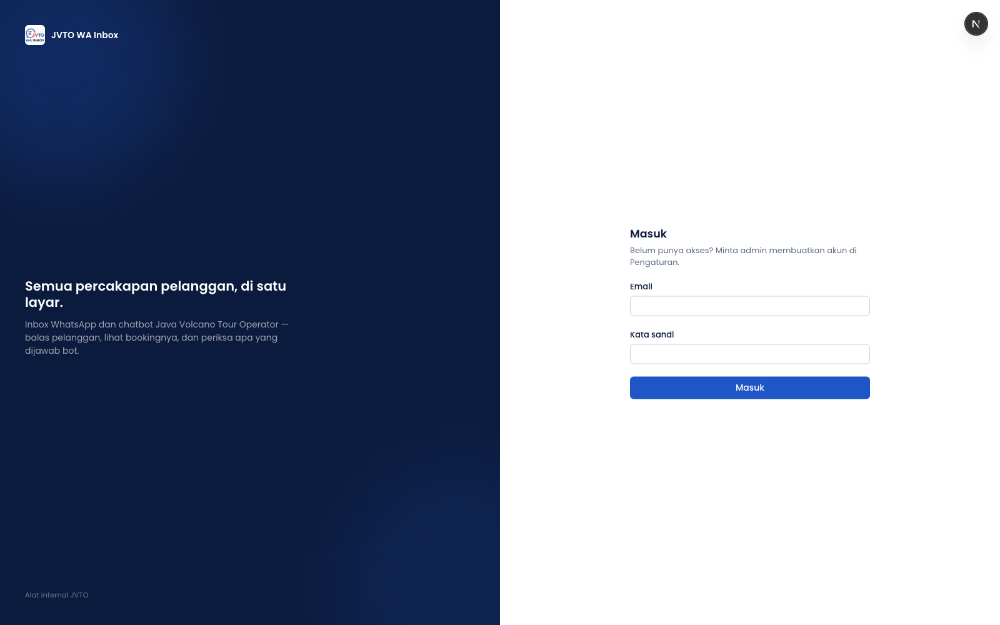
Dari pesan pelanggan masuk sampai balasan terkirim — dan setiap titik di mana bot memutuskan untuk tidak menjawab.
Antrean jeda 5–25 detik itu disimpan di memori proses. Kalau server di-restart tepat di tengah jeda, balasan bot untuk pesan itu hilang. Pesan pelanggannya sendiri sudah tersimpan dan tetap terlihat di Inbox — jadi yang terjadi adalah "bot diam", bukan "pesan hilang".
Di kelima titik ini bot diam sepenuhnya — tidak ada balasan apa pun, tapi pesan pelanggan tetap masuk Inbox dan menaikkan percakapan ke atas daftar.
| # | Bot diam ketika… | Kenapa dirancang begitu |
|---|---|---|
| 1 | Pesan bukan teks — foto, suara, video, dokumen, stiker, lokasi. | Sengaja tidak diperlakukan sebagai kegagalan bot. Pelanggan mengirim foto bukan alasan membunyikan alarm handoff. |
| 2 | Bot dimatikan untuk percakapan itu. | Keputusan agen selalu menang. |
| 3 | Bot dimatikan selama jeda 5–25 detik. | Status dibaca ulang tepat sebelum bot berjalan, jadi agen yang menekan "Ambil Alih dari Bot" di detik terakhir tetap menang. |
| 4 | Batas balasan otomatis terlampaui — maksimum 20 balasan bot per 10 menit per percakapan. | Dicek sebelum satu pun panggilan AI, jadi giliran yang diblok tidak berbiaya. Batasnya per percakapan supaya satu nomor spam tidak merusak layanan untuk pelanggan lain. |
| 5 | Agen mengambil alih saat bot masih menyusun jawaban (bisa memakan puluhan detik). | Status dibaca ulang sekali lagi setelah jawaban jadi; kalau bot sudah dimatikan, balasannya dibatalkan sebelum dikirim. |
Berbeda dari kelima titik di atas, di sini bot mengirim satu kalimat pengakuan, lalu mematikan dirinya sendiri untuk percakapan itu dan membunyikan alarm ke agen.
| # | Pemicu | Catatan |
|---|---|---|
| 1 | Kata kunci eskalasi — daftar 49 frasa: komplain, kecewa, marah, permintaan eksplisit bicara dengan manusia, serta pertanyaan B2B/reseller/kemitraan. | Dicek paling awal, tidak memakai AI sama sekali, dan selalu berjalan tanpa syarat — tidak bisa dimatikan dari form mana pun. |
| 2 | Sinyal eskalasi dari AI — menangkap kalimat baru yang tidak ada dalam daftar kata kunci. | Ini satu-satunya lapisan yang bisa dimatikan operator, lewat sakelar di halaman Chatbot. |
| 3 | Gerbang persetujuan katalog tertutup. | Lihat temuan nomor 3 di bagian terakhir — ini bisa menutup diam-diam. |
| 4 | Klasifikasi tambahan mengenali komplain/permintaan manusia. | Pertahanan berlapis dari daftar kata kunci yang sama. |
| 5 | Tidak ada satu pun paket yang cocok dengan durasi yang diminta untuk destinasi itu. | Permintaannya terlalu custom — tim menindaklanjuti langsung. |
| 6 | Balasan gagal verifikasi harga/tautan dua kali berturut-turut. | Lihat Bagian 3. Balasannya tidak pernah sampai ke pelanggan. |
Kegagalan teknis tidak mematikan bot. AI yang timeout, katalog rusak, jawaban kosong, atau error tak terduga semuanya menghasilkan satu kalimat aman ("maaf, ada gangguan teknis kecil") dan bot tetap aktif untuk pesan berikutnya. Ini disengaja: gangguan lima detik bukan alasan mendiamkan bot untuk pelanggan itu selamanya.
Setiap handoff selalu disertai satu kalimat pengakuan — pelanggan tidak pernah ditinggal dalam diam. Alasan spesifiknya hanya terlihat oleh agen di jejak keputusan, tidak pernah dikutip ke pelanggan.
Jam kerja tidak pernah mendiamkan bot. Setelan jam kerja tim melakukan tepat satu hal: menambahkan kalimat "tim kami kembali jam …" pada pesan handoff bila kejadiannya di luar jam kerja. Bot tetap menjawab 24 jam. Zona waktunya selalu Asia/Jakarta karena servernya berjalan di UTC.
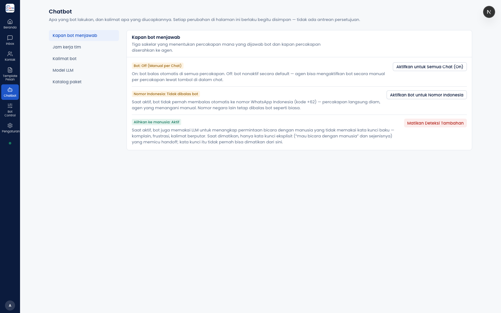
Bagaimana jawaban sampai ke pelanggan, dan pagar apa saja yang mengelilinginya sebelum pesannya keluar.
Aplikasi punya daftar resmi sepuluh aturan yang membatasi bot. Yang perlu dipahami pemilik: delapan di antaranya adalah perilaku tetap di dalam kode, tanpa sakelar di mana pun. Halaman Rules di aplikasi hanya menampilkan daftar ini; ia tidak menyediakan tombol ubah, karena hanya boleh ada satu tempat yang menulis setelan — penulis kedua hanya akan membuat keduanya berselisih.
| # | Aturan | Bisa diubah operator? |
|---|---|---|
| 1 | Kanal Official hanya untuk pesan masuk | Tidak |
| 2 | Unofficial sebagai jalur kirim default | Nilainya, ya — di halaman Pengaturan |
| 3 | Official khusus untuk kemampuan resmi (template, tombol, list) | Tidak — kemampuan mana yang ada adalah fakta tentang API provider, bukan pilihan |
| 4 | Tidak boleh mengarang harga | Tidak |
| 5 | Tidak boleh mengarang URL | Tidak |
| 6 | Serahkan ke manusia saat pelanggan memintanya | Sebagian — sakelarnya hanya mematikan lapisan AI; gerbang kata kunci tetap jalan |
| 7 | Konteks booking didahulukan | Tidak |
| 8 | Lewati nomor Indonesia | Ya |
| 9 | Gabungkan pesan beruntun | Tidak — jendelanya konstanta di kode |
| 10 | Batas balasan otomatis per percakapan | Tidak |
Semua balasan yang disusun AI melewati satu pemeriksaan sebelum dikirim. Cara kerjanya:
Harga JVTO adalah tier per-pax, jadi mengutip tier yang salah adalah kesalahan yang halus, tampak masuk akal, dan dibaca pelanggan sebagai penawaran resmi. Untuk tautan, kegagalannya bahkan sudah pernah benar-benar terjadi: daftar tautan pelanggan di katalog pernah berisi 18 URL rusak (404) yang statusnya tertulis "ada". Tautan yang "diingat setengah" oleh model bukan hipotesis — itu kejadian nyata.
Di luar verifikasi angka, prompt sistem juga melarang bot: menjamin Blue Fire, sunrise, atau akses kawah; menyebut harga sebagai final; meramal cuaca; serta mengarang inklusi paket. Persona bot juga dilarang mengaku sebagai AI, bot, atau asisten.
| Pemeriksaan | Berlaku untuk | Akibat |
|---|---|---|
| Kontak sudah opt-out | Campaign | Blok |
| Kontak sudah opt-out | Balasan 1:1 dan balasan bot | Hanya peringatan |
| Percakapan sudah diambil alih agen | Balasan bot | Blok |
| Teks identik baru saja dikirim (default 60 detik) | Campaign | Blok |
| Teks identik baru saja dikirim | Balasan bot / 1:1 | Hanya peringatan |
| Batas kirim per menit (default 20) | Campaign | Blok |
| Provider gagal berulang (default 5 kegagalan / 5 menit) | Campaign | Blok |
Pengaman ini sengaja dibuat gagal-terbuka: kalau pemeriksaannya sendiri error, pengiriman tetap diteruskan dengan peringatan — karena pengaman yang mati akan mengubah satu gangguan database menjadi pemadaman total pengiriman keluar. Empat angka pengamannya punya batas minimum yang ditegakkan: nol pada angka-angka itu bukan berarti "longgar", nol mematikan gerbangnya.
Baris bertuliskan "Campaign" mengatur fitur yang belum ada di aplikasi ini — tidak ada satu pun bagian aplikasi yang mengirim pesan bertipe campaign. Artinya empat kotak isian pengaman di halaman Pengaturan saat ini tidak mempengaruhi satu pesan pun (temuan 5).
Dan seluruh tabel ini hanya dijalankan pada jalur Unofficial. Pesan yang keluar lewat kanal Official melewatinya sepenuhnya (temuan 4).
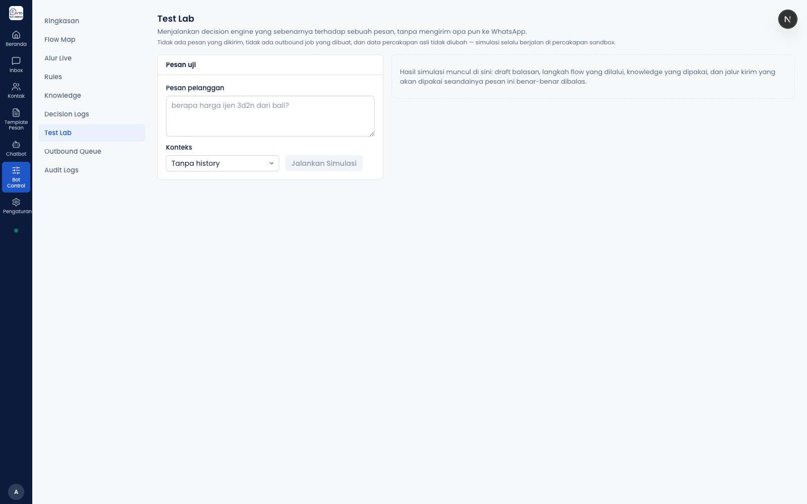
Ada dua halaman yang menggambarkan alur bot, dan keduanya menjawab pertanyaan yang berbeda. Keduanya read-only.
| Flow Map | Alur Live | |
|---|---|---|
| Isinya | 28 langkah tulisan tangan, satu alur | 11 kotak langkah besar |
| Sumber datanya | Konstanta di dalam kode — halaman ini tidak memanggil API apa pun | Peta statis + siaran langsung + riwayat dari database |
| Menampilkan kejadian nyata? | Tidak. Murni gambar dari kode. | Ya — kotaknya menyala saat pesan nyata melewatinya |
| Bisa diedit? | Tidak. Halaman menyatakannya sendiri. | Tidak. Ketiga sumber datanya hanya bisa membaca. |
Peta di Alur Live juga statis — posisi setiap kotak ditulis tangan di kode. Yang benar-benar "live" hanyalah sorotannya. Jadi kalau suatu saat alur bot berubah di kode, tidak ada satu pun dari kedua halaman ini yang menyesuaikan dirinya sendiri; keduanya harus ikut diubah manual.
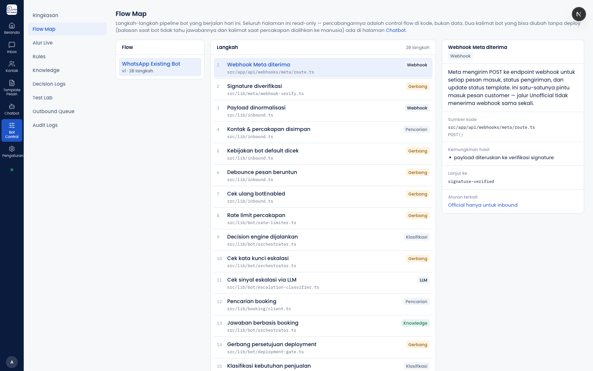
Pesan masuk diterima → Kontak & percakapan disimpan → Kelayakan bot dicek → Pesan beruntun digabung → Cek permintaan bicara ke manusia → Cek booking pelanggan → Pahami kebutuhan & cocokkan paket → Susun balasan dari knowledge → Verifikasi harga & tautan → Diserahkan ke agen manusia → Balasan dikirim ke pelanggan. Kesebelasnya benar-benar terpasang di jalur produksi.
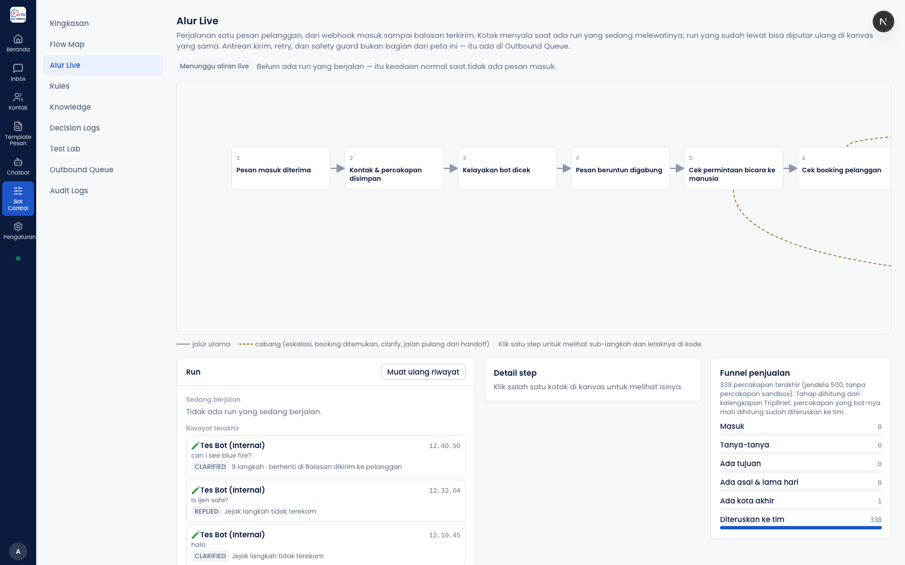
Lima tahap yang dipakai agen sehari-hari, dan bagaimana tahap itu bisa naik sendiri dari data booking.
Tahapnya: Baru → Negosiasi → Booked → Lunas → Selesai, tersimpan pada percakapan itu sendiri. Tahap ini muncul di empat tempat: dropdown di panel kanan Inbox, lencana di daftar percakapan, kolom dan filter di halaman Kontak, serta panel Funnel penjualan di Beranda.
Aturannya hanya tiga baris, dijalankan berurutan terhadap data booking pelanggan:
Tidak ada satu pun cabang yang bisa menghasilkan Baru atau Negosiasi — kedua tahap itu hanya bisa datang dari tangan agen.
Ada tiga hal yang bisa menulis tahap: agen lewat dropdown (bebas), pembaruan otomatis saat percakapan dibuka atau bot berjalan (hanya naik), dan penyapu berkala di latar belakang (hanya naik). Penyapu kedua khusus mengejar percakapan yang belum pernah sekali pun diambil data bookingnya, dibatasi 25 percakapan per putaran karena setiap percakapan berarti satu panggilan ke API booking.
Saat penyapu ini dibuat, kondisinya: 33 dari 35 percakapan yang punya booking tahapnya tertinggal, dan 269 dari 340 percakapan belum pernah dicek sama sekali. Itu ukuran seberapa besar pekerjaan yang tadinya harus dilakukan manual.
Sering dikatakan bahwa tahap "tidak pernah mundur melewati setelan agen". Itu hanya separuh benar. Yang benar adalah tahap tidak pernah mundur, titik — sistem tidak menyimpan siapa yang menyetel tahap, jadi yang dilindungi adalah angkanya, bukan keputusan agennya.
Konsekuensi nyatanya: kalau agen sengaja menurunkan tahap — misalnya dari Booked kembali ke Negosiasi karena pelanggan membatalkan lewat telepon — penyapu berkala berikutnya akan menaikkannya kembali ke Booked tanpa pemberitahuan apa pun.
Aplikasi ini punya dua sistem tahap yang tidak saling terhubung, dan keduanya disebut "funnel". Yang kedua punya enam tahap — Masuk → Tanya-tanya → Ada tujuan → Ada asal & lama hari → Ada kota akhir → Diteruskan ke tim — dan mengukur kelengkapan informasi perjalanan yang berhasil dikumpulkan bot, bukan uang dan bukan booking. Ia hanya muncul di satu tempat (kartu kanan halaman Alur Live) dan dihitung atas 500 percakapan terakhir saja. Jangan membandingkan angkanya dengan funnel penjualan di Beranda; keduanya menghitung hal yang berbeda.
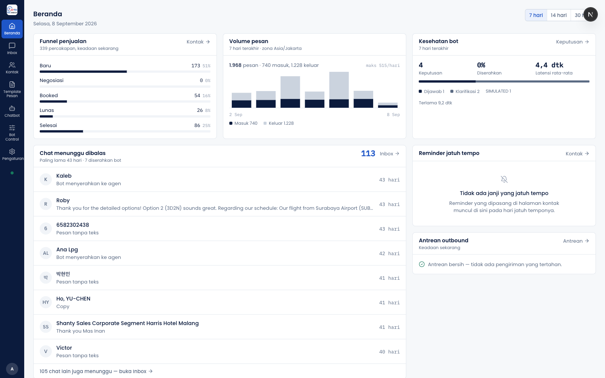
Bot punya dua sumber pengetahuan yang terpisah dan berbeda sifat. Keduanya digabung saat menjawab, bukan disatukan di database.
jvto-whatsapp-agent-runtime.Penggabungan terjadi saat bot menjawab, di dalam prompt, bukan di tabel database. Katalog di-resolve lebih dulu, lalu baris knowledge terkelola yang relevan ditambahkan di atasnya. Knowledge terkelola tidak pernah menggantikan katalog — kalau form web bisa menimpa data rilis, kontradiksinya jadi tidak terlihat, karena keduanya sama-sama "pengetahuan" dan tidak ada cara tahu mana yang menjawab. Setiap fakta yang dipakai dilabeli sumbernya (katalog atau terkelola) di jejak keputusan, supaya pertanyaan "jawaban salah ini datang dari data rilis atau dari sesuatu yang diketik orang hari Selasa?" bisa dijawab. Harga dan tautan dari knowledge terkelola sengaja ditulis sebagai baris tersendiri supaya pemeriksa harga mengenalinya sebagai sumber yang sah.
Pencocokannya berbasis kata yang sama. Sebuah entri hanya ikut ke prompt kalau pertanyaan pelanggan berbagi satu kata sepanjang minimal empat huruf dengan pertanyaan atau tag entri itu. Tidak ada pemahaman makna, tidak ada pencocokan konsep. Entri yang benar tapi memakai kosakata berbeda dari pelanggan tidak akan terpakai. Ini pilihan sadar, bukan kelalaian — tapi akibatnya nyata: kata-kata dalam knowledge harus menyerupai kata yang benar-benar dipakai pelanggan.
Ada jeda sampai 30 detik sebelum perubahan terpakai, walau cache dibuang segera setelah publish.
Knowledge terkelola hanya berlaku di satu cabang dari lima. Ia tidak dipakai saat pelanggan sudah punya booking aktif, saat bot belum tahu destinasi yang dimaksud, saat bot sedang menanyakan start/finish/durasi, dan pada semua cabang penyerahan ke manusia. Praktisnya: knowledge yang ditulis operator baru berpengaruh setelah bot tahu destinasi pelanggan, gerbang persetujuan terbuka, dan paket yang cocok ditemukan.
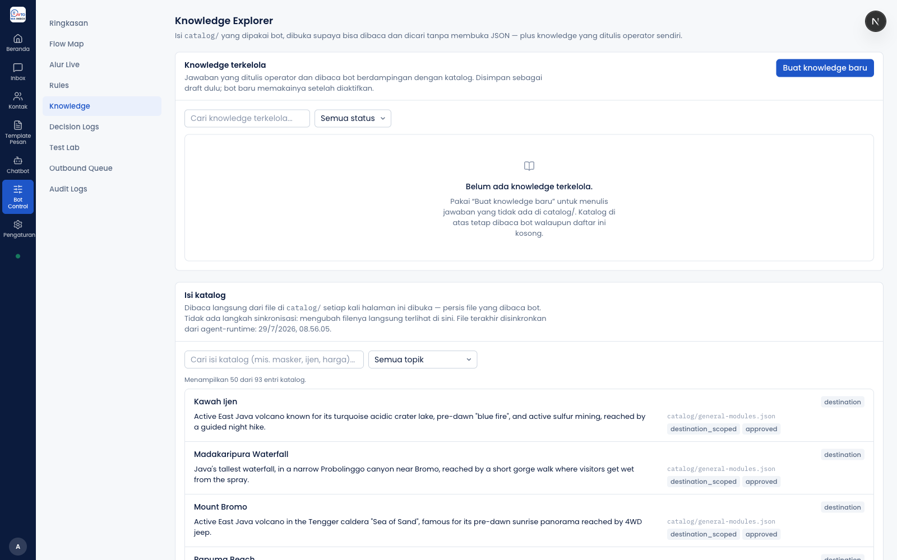
Rantai lengkap dari "seseorang menyadari bot menjawab keliru" sampai "bot berhenti mengulanginya" — beserta tempat di mana rantai itu putus.
Bot mencatat sendiri dua jenis kegagalan tanpa menunggu siapa pun menandai: tidak ada fakta yang bisa dipakai (katalog tidak punya apa pun untuk topik itu) dan gagal verifikasi (dua kali berturut-turut mengarang harga atau tautan). Daftarnya ada di halaman "Pertanyaan Tak Terjawab" dan diringkas di Beranda.
Knowledge baru tidak menjangkau tiga dari lima cabang bot. Kalau jawaban salahnya terjadi saat pelanggan sudah punya booking, saat destinasi belum diketahui, atau saat bot sedang menanyakan start/finish/durasi, maka membuat knowledge draft tidak akan memperbaikinya — perbaikannya harus lewat katalog atau lewat perubahan kode.
Cabang booking tidak pernah melaporkan kekurangan pengetahuan, karena pencatatan kesenjangan hanya dipasang di cabang yang membaca knowledge terkelola.
Sisa kata dari alur lama masih muncul. Setelah draft dibuat, layar berkata "Buka halaman Knowledge untuk mengirimnya ke review" — padahal tahap review sudah tidak ada; yang tersisa hanya Publish. Jawaban dan alasannya juga masih diketik lewat kotak dialog kecil bawaan browser, bukan form yang layak.
Tabel Decision Logs tidak pernah dipangkas. Ia tumbuh satu baris per balasan bot, lengkap dengan jejaknya, selamanya. Hanya audit log yang dibersihkan otomatis setelah 365 hari.
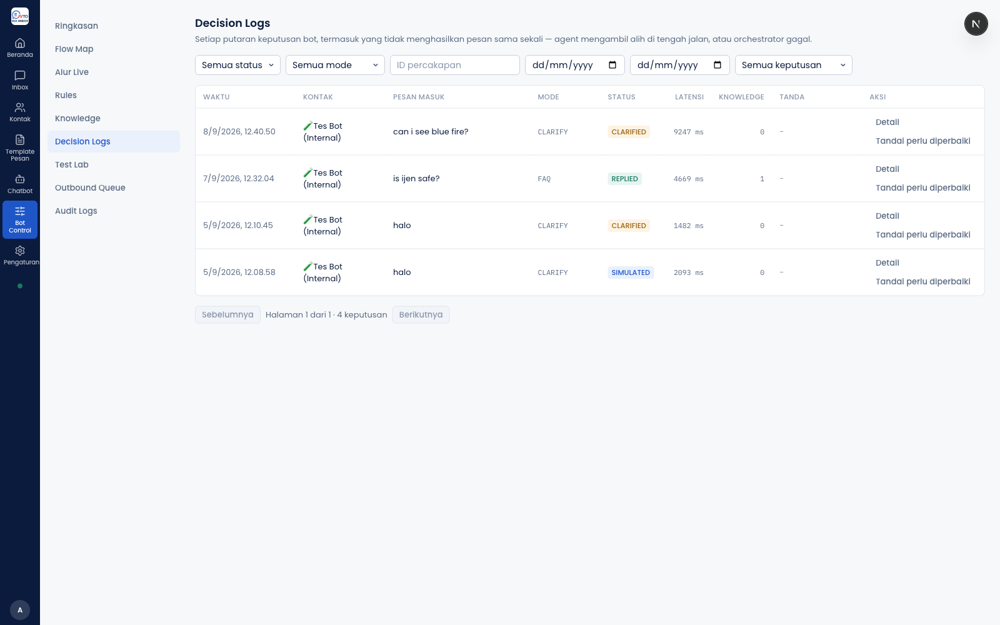
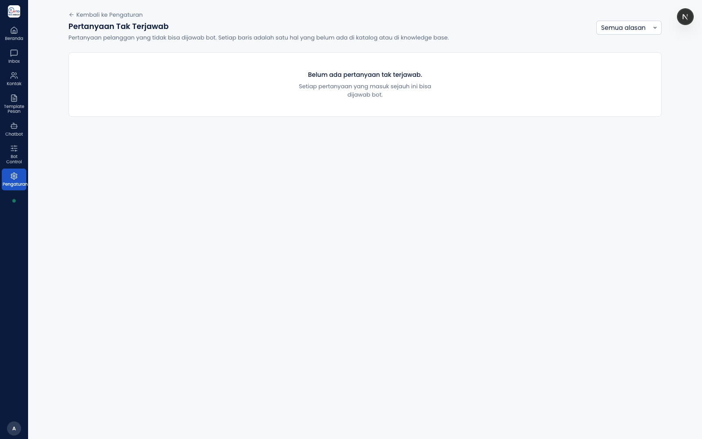
Tiga kolom: daftar percakapan di kiri, thread dan kotak tulis di tengah, panel kontak di kanan.
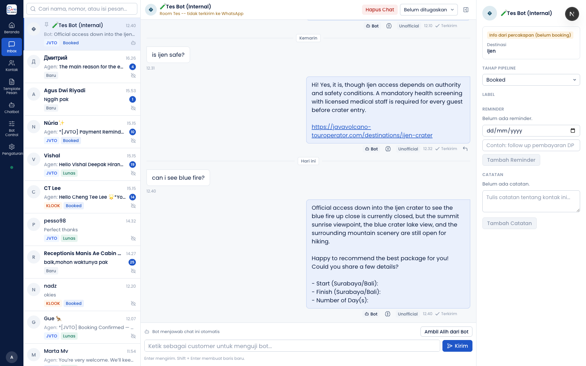
| OFFICIAL (Meta Cloud API) | UNOFFICIAL (wa-coexist) | |
|---|---|---|
| Menerima pesan masuk | Ya | Tidak — semua pesan masuk lewat Meta |
| Teks, gambar, video, dokumen | Ya | Ya |
| Audio | Ya | Ya, tapi terkirim sebagai dokumen |
| Template, tombol, list, carousel | Ya | Tidak |
| Status Diterima / Dibaca | Ya | Tidak |
| Jalur pengiriman | Langsung ke Meta | Lewat antrean + retry |
| Kalau provider mati | Pesan langsung gagal | Disimpan, lalu dicoba ulang: langsung → 30 detik → 2 menit → 10 menit |
| Pemeriksaan pengaman kirim | Tidak dijalankan | Ya |
Pilihan manual agen per pesan selalu menang atas setelan default. Yang menentukan sehari-hari adalah satu kolom setelan di halaman Pengaturan, dan itu satu-satunya sumber kebenaran default kanal. Pada tangkapan layar Pengaturan di Bagian 9, nilai yang terbaca adalah Unofficial — nilai yang lebih aman dari keduanya, karena hanya jalur itu yang melewati pengaman kirim.
19 halaman di area terkunci login. Sembilan di antaranya read-only — tidak ada tombol yang mengubah apa pun.
Halaman Histori Biaya Percakapan menyatakan bahwa saldo dan limit penagihan WhatsApp Business tidak tersedia lewat API mana pun dan harus dicek manual di Meta Business Manager. Jadi aplikasi ini bisa menunjukkan biaya percakapan, tapi tidak bisa memperingatkan saat saldo menipis.
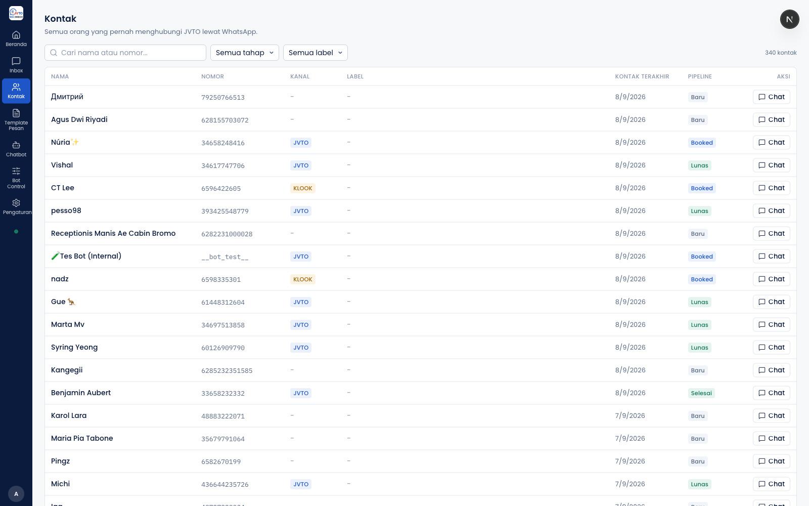
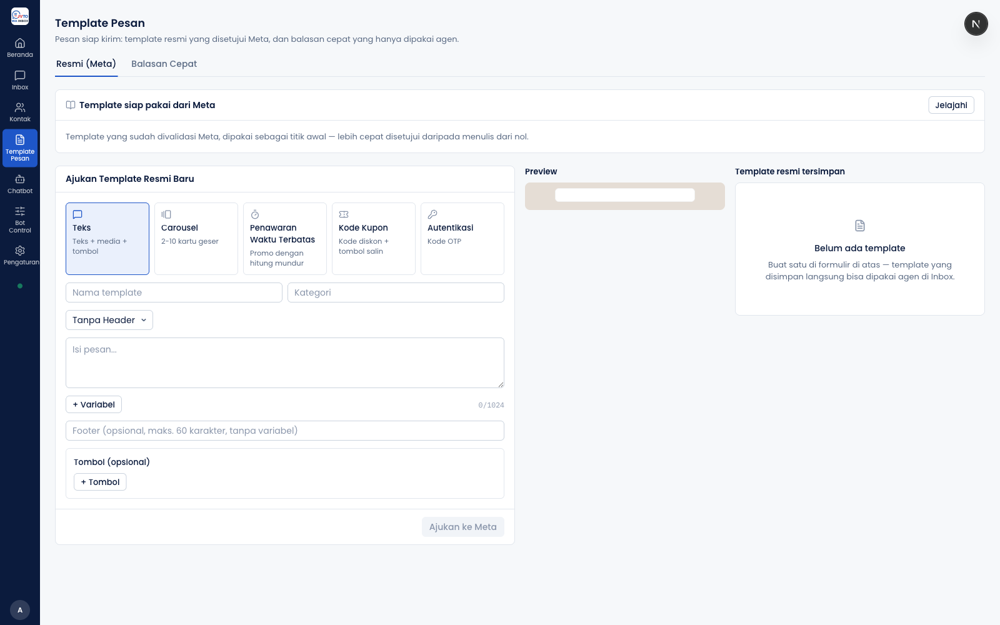
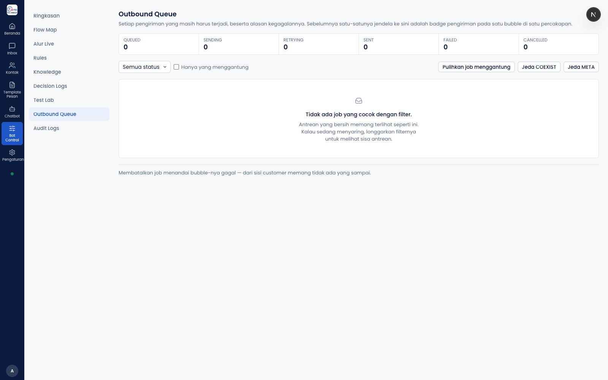
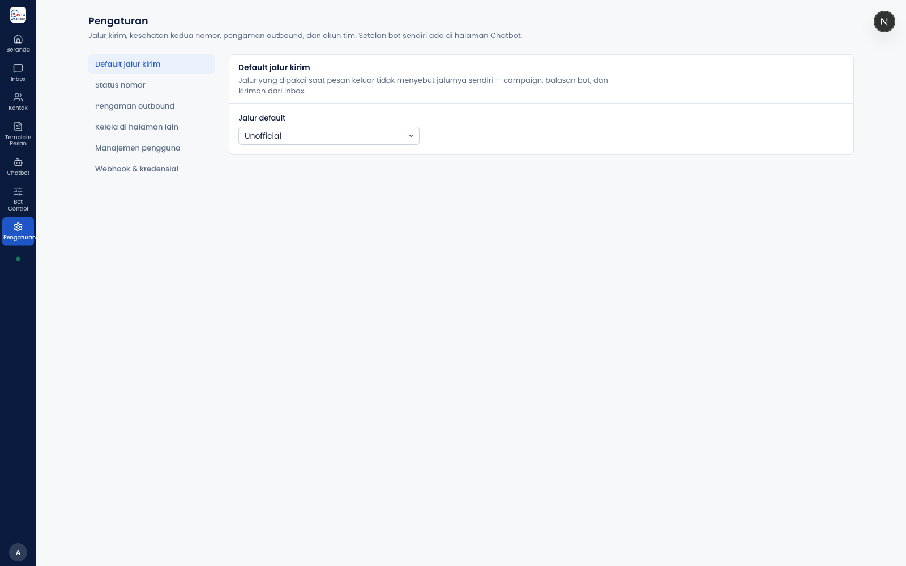
Semuanya dihitung dari kode, bukan diperkirakan.
srcAngka 2.247 kasus test adalah hitungan statis dari pola kode, bukan jumlah test yang benar-benar lulus — test tidak dijalankan saat penyusunan laporan ini. Angka sebenarnya kemungkinan lebih tinggi, karena 21 blok test berparameter masing-masing mengembang jadi beberapa kasus.
Dari 66.972 baris kode, kira-kira separuhnya adalah test (33.351 baris produksi berbanding 33.621 baris test). Itu rasio yang tinggi dan merupakan indikator kesehatan yang baik.
26 temuan, diurutkan dari yang paling berdampak pada uang dan pelanggan. Bagian ini sengaja tidak diperhalus.
Tidak ada penjadwal, notifikasi, suara, email, atau pesan WhatsApp yang pernah membaca tabel reminder. Satu-satunya pekerjaan terjadwal di aplikasi ini mengurus antrean kirim, pemangkasan audit log, dan tahap pipeline — reminder tidak disebut sama sekali. Notifikasi browser hanya bereaksi pada satu jenis kejadian: alarm handoff bot. Kalau operator tidak membuka Beranda, reminder yang lewat tanggal tidak akan menagih dirinya sendiri.
Kodenya menyatakannya sendiri: aplikasi ini tidak punya penjalan pekerjaan latar belakang. Tidak ada berkas konfigurasi cron, pm2, atau systemd di repo. Kalau penjadwal di server belum dipasang atau berhenti diam-diam:
Ini perlu dikonfirmasi ke pihak yang mengelola VPS: apakah penjadwalnya benar-benar terpasang dan masih hidup.
Kalau berkas persetujuan katalog di server hilang, rusak, atau tidak lagi cocok dengan isi katalog saat ini, setiap pelanggan yang belum punya booking langsung diserahkan ke manusia. Berkas itu tidak ikut disimpan di repo — ia hanya hidup di VPS. Artinya satu langkah deploy yang salah bisa mendiamkan bot untuk seluruh lalu lintas calon pelanggan, dan satu-satunya gejala di layar adalah "semua percakapan tiba-tiba diserahkan ke agen". Tidak ada peringatan khusus untuk kondisi ini.
Seluruh pemeriksaan pengaman hanya dijalankan pada jalur Unofficial. Pada kanal Official: tidak ada cek opt-out, tidak ada deteksi pesan duplikat, tidak ada pemeriksaan ulang bahwa percakapan sudah diambil alih agen, tidak ada antrean, dan tidak ada percobaan kirim ulang.
Ini perlu dibaca bersama satu fakta lain: nilai default kanal di skema database adalah OFFICIAL, sedangkan default di kode adalah UNOFFICIAL. Tangkapan layar Pengaturan pada laporan ini menunjukkan nilai tersimpannya Unofficial — kabar baik — tetapi ini tetap hal yang paling layak diperiksa langsung oleh pemilik di server produksi, dan diperiksa ulang setiap kali database dipulihkan atau dibuat ulang.
Batas kirim per menit, ambang kegagalan provider, jendela kegagalan provider, dan sebagian besar efek jendela duplikat hanya berlaku untuk pengiriman bertipe campaign — dan tidak ada satu bagian pun dari aplikasi yang mengirim pesan bertipe itu. Kodenya mengakuinya terang-terangan: "campaign, yang belum ada sebagai fitur". Jadi empat kotak isian di halaman Pengaturan saat ini tidak mempengaruhi satu pesan pun. Mengubahnya terasa seperti mengencangkan pengaman, padahal tidak mengubah apa-apa.
Untuk balasan 1:1 dan balasan bot, opt-out hanya menghasilkan peringatan, bukan blokir. Blokirnya hanya berlaku untuk campaign — yang belum ada (temuan 5). Lebih jauh, peringatan itu tidak pernah sampai ke layar operator: satu-satunya tempat ia dituliskan adalah log server. Satu-satunya tempat peringatan pengaman terlihat manusia adalah Test Lab. Artinya: menandai kontak sebagai opt-out saat ini tidak menghentikan pesan apa pun.
Knowledge terkelola tidak dipakai saat: pelanggan sudah punya booking aktif, destinasi belum diketahui bot, bot sedang menanyakan start/finish/durasi, dan pada semua cabang penyerahan ke manusia serta pesan cadangan teknis. Praktisnya: kalau jawaban salah terjadi di cabang-cabang itu, menulis knowledge baru tidak akan memperbaikinya. Perbaikannya harus lewat katalog atau lewat kode — yang berarti butuh programmer, bukan operator.
Sebuah entri ikut ke prompt hanya kalau pertanyaan pelanggan berbagi satu kata sepanjang minimal empat huruf dengan pertanyaan atau tag entri itu. Tidak ada pemahaman makna. Entri yang benar tapi memakai kosakata berbeda dari pelanggan tidak akan terpakai. Ini pilihan sadar yang dijelaskan kodenya, bukan kelalaian — tapi konsekuensinya nyata: menulis knowledge saja tidak cukup, kata-katanya harus menyerupai kata yang benar-benar dipakai pelanggan.
Dropdown menawarkan lima tahap termasuk Selesai, tapi bagian yang menyimpannya hanya menerima empat. Memilih "Selesai" selalu menghasilkan pesan merah "Gagal mengubah status pipeline". Tahap Selesai hanya bisa dicapai otomatis dari tanggal trip yang sudah lewat. Ini bug kecil dengan gesekan harian yang nyata: agen mencoba, gagal, dan tidak diberi tahu kenapa.
Database tidak menyimpan siapa yang menyetel tahap, jadi yang dilindungi adalah angka peringkatnya, bukan keputusan agennya. Agen yang menurunkan Booked kembali ke Negosiasi karena pelanggan membatalkan lewat telepon akan mendapati tahapnya naik lagi ke Booked pada penyapuan berikutnya, tanpa pemberitahuan.
Bagian belakang untuk membuat label sudah ada, tapi tidak dipanggil oleh satu layar pun — aplikasi hanya bisa membaca daftar label yang sudah ada, dan data awal aplikasi tidak mengisi label apa pun. Akibatnya, kalau tabel label kosong (dan tangkapan layar Kontak memperlihatkan kolom Label seluruhnya kosong), seluruh fitur label tidak bisa dipakai dari aplikasi sama sekali.
Keduanya hanya ada di halaman Kontak. Di Inbox, satu-satunya penyaring adalah pencarian teks. Label di Inbox murni penanda visual — tidak bisa dipakai untuk memilah pekerjaan.
Penyedia Unofficial tidak mengembalikan penanda pesan, jadi tidak ada yang bisa dicocokkan dengan tanda terima dari Meta. Ini keterbatasan penyedia, bukan bug — tapi jangan disalahartikan sebagai "pesan tidak sampai".
Penyedia Unofficial tidak punya tempat untuk keterangan pada video dan dokumen, jadi teks pendampingnya dibuang — bukan salah kirim, tapi hilang. Gambar tetap membawa keterangannya. Artinya: kirim penjelasan penting sebagai pesan teks terpisah, jangan sebagai caption video.
Saat agen membalas sambil mengutip pesan tertentu, kutipan itu disimpan lokal untuk tampilan sendiri tapi tidak pernah ikut terkirim. Operator melihat kutipan; pelanggan tidak. Untuk percakapan panjang, ini bisa membuat balasan terasa tidak nyambung dari sisi pelanggan.
Tidak ada logika jendela sesi di mana pun di aplikasi. Aplikasi tidak memperingatkan sebelum agen mengirim pesan bebas lewat Official kepada pelanggan yang sudah lama tidak menulis — pesan itu akan ditolak Meta tanpa peringatan lebih dulu. Mengingat Beranda menunjukkan chat yang menunggu sampai 43 hari, ini kondisi yang mudah terjadi.
Semua kegagalan pengambilan data booking ditelan diam-diam, lalu panel menampilkan kartu netral "Belum ada data booking atau brief perjalanan". Kalau API booking JVTO mati, seluruh pelanggan akan terlihat seperti belum pernah booking — termasuk yang sudah lunas. Agen bisa salah bicara ke pelanggan berdasarkan layar yang tampak normal.
Ketiga statusnya ada dan dikirim ke layar, tapi tidak ada kode yang pernah menulis "Menunggu" atau "Selesai". Semua percakapan selamanya berstatus Terbuka. Beranda memakai status ini untuk menghitung, sehingga angka "percakapan terbuka" di Beranda sebetulnya adalah hitungan semua percakapan yang pernah ada — bukan yang benar-benar butuh perhatian.
Bot nonaktif atau pesan bukan teks, pesan yang digabung ke burst berjalan, bot dimatikan sebelum bot berjalan, dan batas balasan terlampaui — keempatnya terjadi sebelum barisnya ditulis ke database, jadi tidak pernah muncul di riwayat. Alasan "agen mengambil alih saat bot menyusun jawaban" juga tidak tersimpan. Status "dilewati" pada kanvas adalah kode mati — tidak pernah ditulis sekali pun, sehingga "sengaja dilewati" tidak bisa dibedakan dari "tidak pernah dijalankan".
Hanya audit log yang dipangkas otomatis setelah 365 hari. Catatan keputusan bot — satu baris per balasan, lengkap dengan jejak dalam bentuk JSON — tidak punya pemangkas apa pun. Selama volume bot masih kecil ini belum terasa; pada volume tinggi, ini akan menjadi masalah ukuran database yang harus ditangani.
Dokumen internal proyek dan komentar di skema database menyatakan bahwa teks pelanggan dan data booking tidak pernah keluar dari mesin VPS. Namun model default yang benar-benar dipakai adalah tag berakhiran -cloud, dan komentar di berkas kodenya sendiri menjelaskannya sebagai salah satu tag model milik Ollama yang diteruskan ke layanan cloud, dengan autentikasi di level daemon pada VPS. Permintaannya memang dikirim ke alamat lokal, tetapi daemon Ollama-lah yang meneruskannya keluar.
Dokumen dan kode tidak sepakat di titik ini, dan ini satu-satunya pertanyaan privasi data di seluruh laporan. Kalau JVTO pernah menjanjikan ke siapa pun bahwa data pelanggan tidak meninggalkan servernya, ini perlu dikonfirmasi dan diputuskan pemilik: ganti ke model lokal murni, atau perbarui klaimnya.
Setelah membuat draft knowledge dari Decision Logs, layar berkata "Buka halaman Knowledge untuk mengirimnya ke review" — padahal tahap review sudah tidak ada; yang tersisa hanya Publish. Jawaban dan alasannya juga masih diketik lewat kotak dialog kecil bawaan browser, bukan form. Kecil, tapi ia mengajarkan alur yang salah kepada orang baru.
Catatan pada kontak hanya bisa dibuat dan dibaca. Salah ketik bersifat permanen, termasuk catatan yang keliru menyebut nama atau angka pelanggan.
Di laptop kecil, tablet, dan ponsel, panel booking, label, catatan, dan reminder tidak dapat diakses dari Inbox sama sekali — semuanya harus lewat halaman Kontak lalu detail kontak. Untuk tim yang kadang membalas pelanggan dari perangkat kecil, ini keterbatasan yang terasa setiap hari.
Simulasi selalu berjalan di percakapan sandbox, dan percakapan sandbox sengaja tidak pernah punya data booking. Akibatnya perilaku bot terhadap pelanggan yang sudah booking tidak bisa diuji di Test Lab. Keterbatasan ini dilaporkan terbuka oleh simulatornya sendiri lewat peringatan di layar, tidak disembunyikan.